El hip hop es una cultura originada en el sur del Bronx y Harlem, en la ciudad de Nueva York, entre jóvenes afroamericanos y Latinos (Principalmente Boricuas y Jamaiquinos)durante la década de 1970. Si bien el término hip hop o rap se usa a menudo para referirse al estilo musical y al estilo de vida, se considera que el hip hop no solo se circunscribe al ámbito musical y por el contrario consta de cuatro principales elementos: rap (oral: recitar o cantar), turntablism o "DJing" (auditiva o musical), breaking (físico: baile) y graffiti (visual: pintura). A pesar de sus variados y contrastados métodos de ejecución, se asocian fácilmente con la pobreza y la violencia que subyace al contexto histórico que dio nacimiento a la subcultura. Para este grupo de jóvenes, ofrece rebelarse en contra de las desigualdades y penurias que se vivían en las áreas urbanas de escasos recursos de Nueva York así que el hip hop funcionó inicialmente, como una forma de auto-expresión que propondría reflexionar, proclamar una alternativa, tratar de desafiar o simplemente evocar el estado de las circunstancias de dicho entorno, favoreciendo su desarrollo artístico. Incluso mientras continúa la historia contemporánea, a nivel mundial, hay un florecimiento de diversos estilos en cada uno de los cuatro elementos, adaptándose a los nuevos contextos en los que se ha inmerso el hip hop, sin desligarse de los principios fundamentales, los cuales proporcionan estabilidad y coherencia a la cultura.
DJ o Disc-Jockey
Es aquel que crea y reproduce pistas musicales en una mesa de mezclas. En los años 70 se empezaba a experimentar con la práctica de mezclar música. La producción del DJ es parte fundamental dentro del rap, ya que sirve como base para la rima del MC. Una técnica común empleada por el DJ es el scratching, que consiste en mover de adelante a atrás el vinilo repetidas veces mientras se reproduce para generar un sonido de transición entre ritmos. Actualmente, las mesas de mezcla cuentan con unos platos destinados a esta acción y las canciones son archivos digitales.
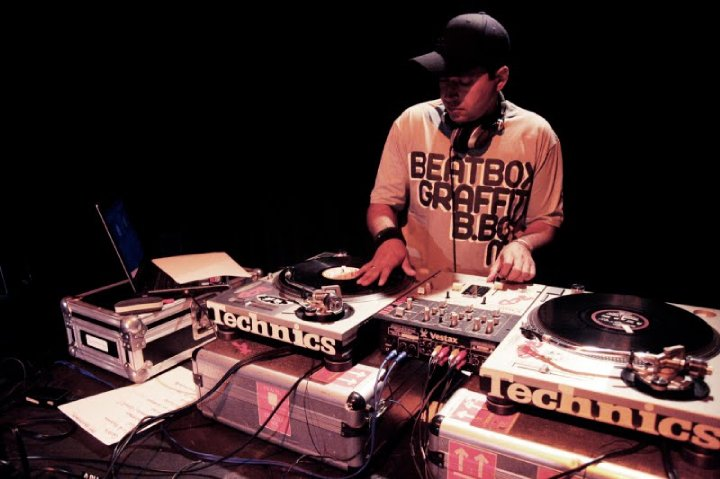
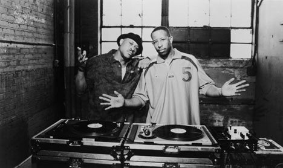
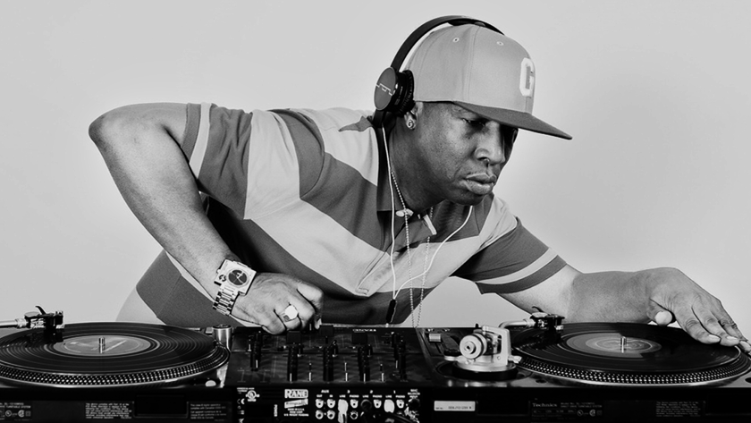
El grafiti
se desarrolló antes de la emergencia del Hip hop como cultura. Consiste en utilizar pintura en aerosol para dibujar y colorear textos e imágenes llamativas sobre un muro. Normalmente el texto se corresponde con la firma de su autor, aunque también puede tratarse de un texto más abstracto o creativo. Su finalidad es impactar visualmente y actuar como llamada de atención del mismo modo en que lo hace el rap. Esta técnica, que suele incluir un elemento subversivo, ha pasado a considerarse un arte gracias a los trabajos de conocidos grafiteros como Banksy o Shepard Fairey.
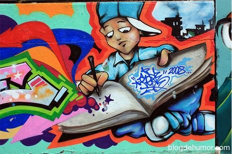
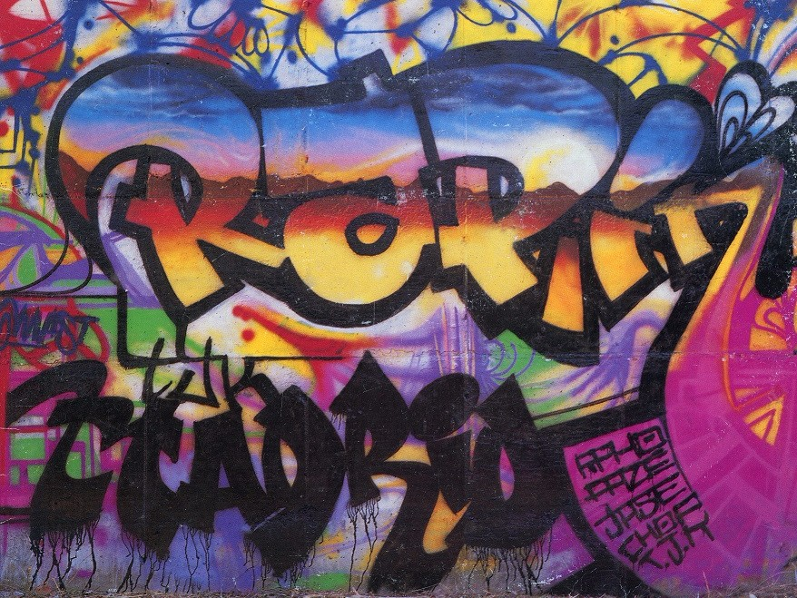
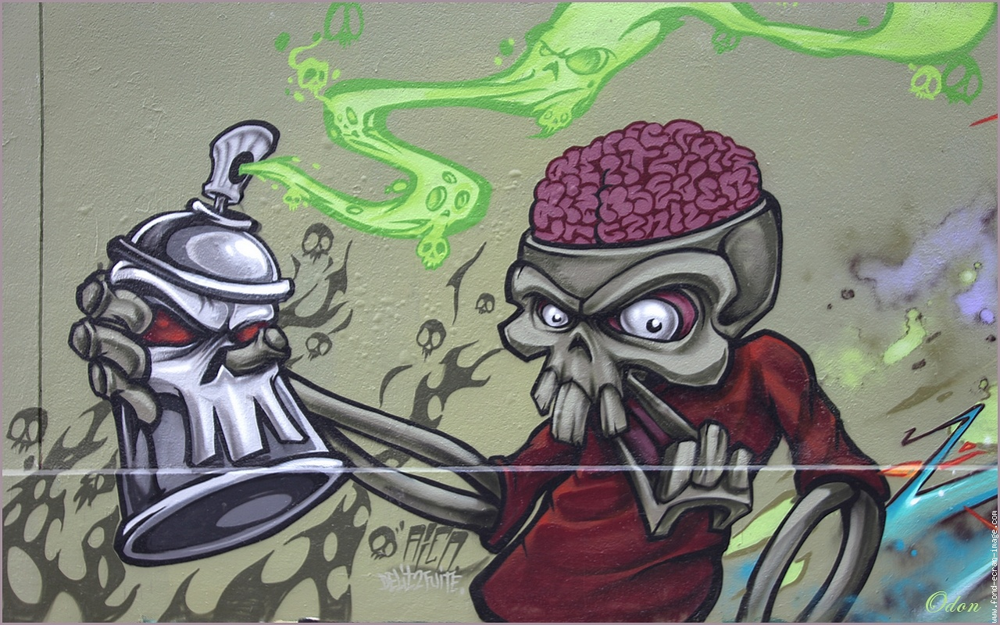
MC
es como se conoce a la persona que interpreta el género musical conocido como rap, que nació influenciado por el soul, el funk e incluso algunos ritmos latinos. Los raperos o MC’s emplean una lírica fluida para transmitir su descontento social y su inconformismo en un contexto de lucha de clases heredado de sus inicios. Conforme ha ido desarrollándose, el rap ha perdido parte de su esencia y ha evolucionado en una rama más de la música comercial que toca temas más triviales con raperos como Eminem o SFDK.
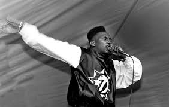
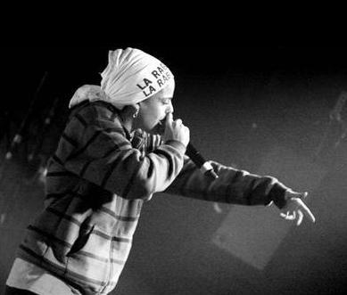
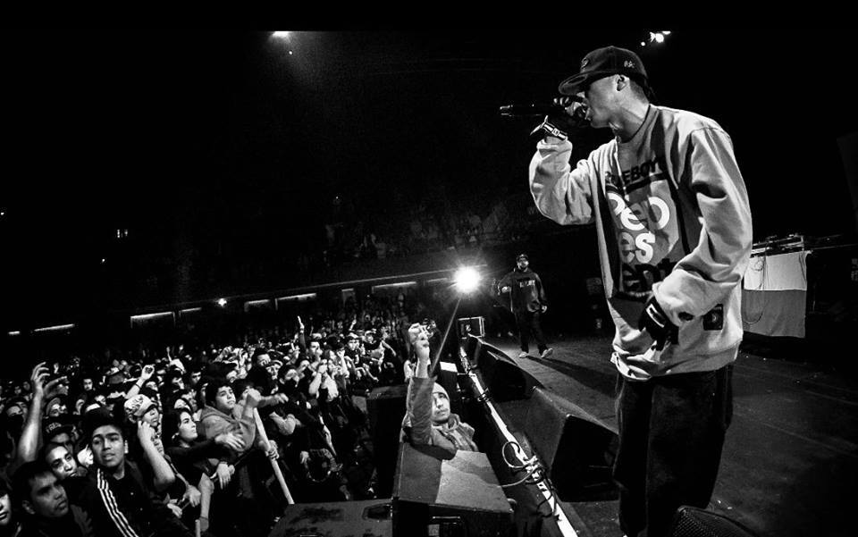
El breakdance
es la forma en la que los b-boys, como se conoce a la gente que practica esta actividad, tienen de bailar el rap. Los jóvenes que lo practican se agrupan en corro y bailan de uno en uno o por parejas frente al resto. Sus pasos más característicos incluyen mantenerse en equilibrio durante varios segundos sobre las manos y la cabeza o girar frenéticamente en el suelo sobre el torso.
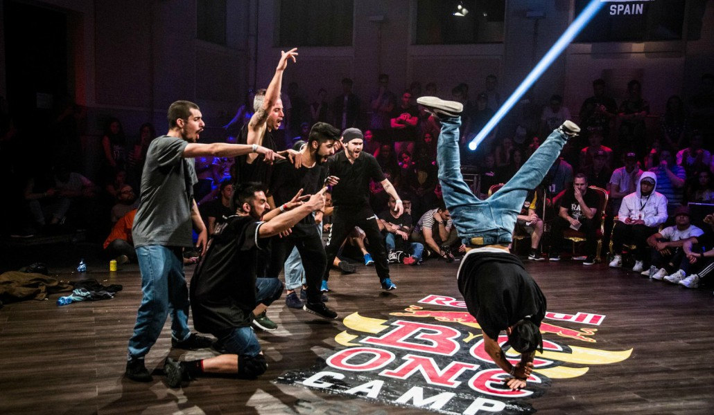
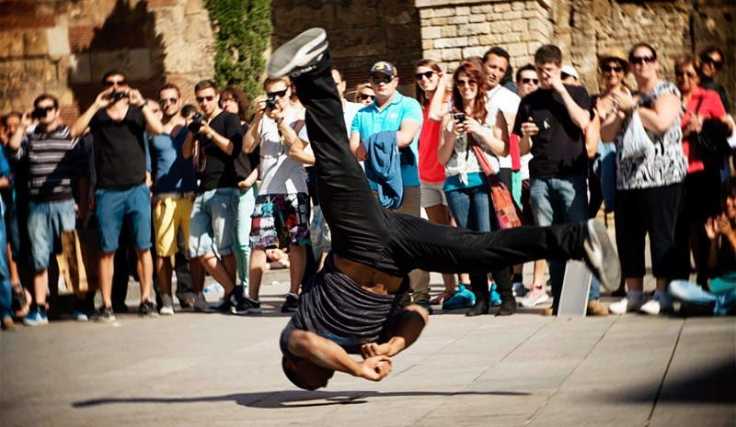
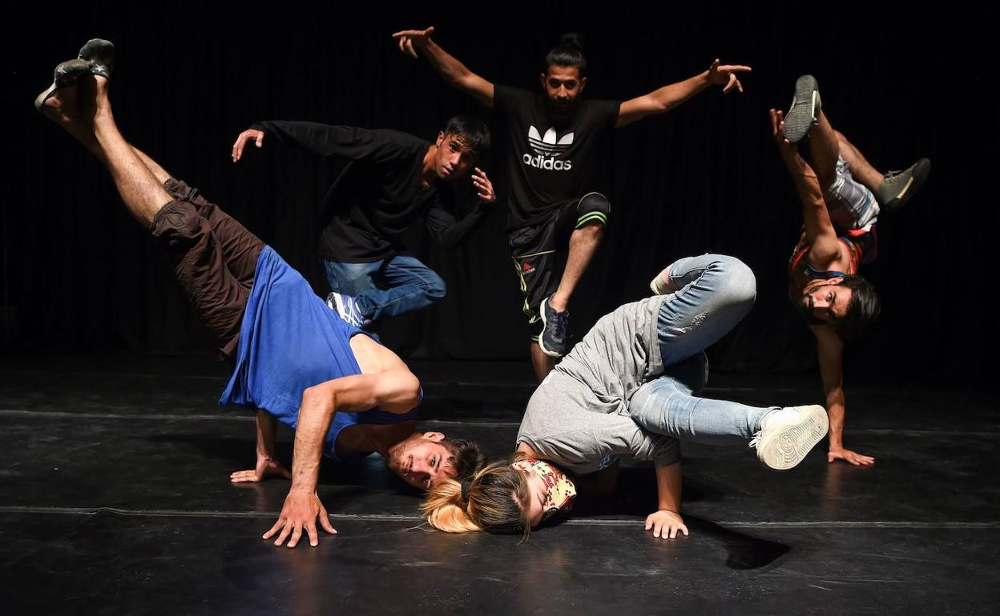
Canserbero (11 de marzo de 1988 – 20 de enero de 2015) rapero, cantante, compositor y activista. Nació en Caracas, Maracay, Venezuela. Fue bautizado Tirone José González Orama. Sus padres son José Rafael González Ollarves y Leticia Orama.
Ignacio José Fornés Olmo, conocido como Nach ( Residente en Alicante con nacimiento en Albacete, 1 de octubre de 1974), es un rapero, sociólogo, poeta, escritor y actor español.
Javier Ibarra Ramos, más conocido por su nombre artístico Kase.O, es un rapero, productor y compositor español, miembro del grupo de rap español Violadores del Verso junto a los también raperos SHO-HAI y Lírico, y el DJ R de Rumba.